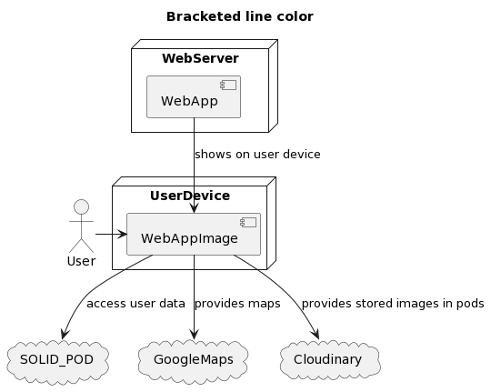

1. Introduction and Goals
The software development company HappySw has been hired by the Council of Brussels to develop a software system called LoMap. This system will allow citizens to have personalized maps of places and local businesses in their city. The places that can be mapped include shops, bars, restaurants, sights, and cultural attractions, among others. Users will have full control over their personalized maps and the shared information will be stored in a personal pod according to the SOLID project.
HappySw’s goal is to develop a generic software solution that can be deployed and used in other cities. The initial focus of the project is on the user, allowing them to create their own personal map of the places they live. The next step could be to allow places such as shops, restaurants, etc. to create their own digital spaces.
The software development project aims to create a system that meets the underlying business goals, essential features, and functional requirements. The architecture of the system must also meet specific quality goals, which are of utmost importance to the major stakeholders (especially the Happy Software project management). The relevant stakeholders and their expectations must also be considered during the development process.
As the software architects and developers of the LoMap aplication we must take into account the following issues:
-
Business Goals: On request of Brussels' Council, LoMap has to provide citizens with personalized maps about local places and business. Regarding to the enterprise’s expectations, the software solution should aim to be general enough to be adapted to other future projects.
-
Quality Goals for the Architecture:
-
The information about a place should be stored in each user’s personal pod.
-
Security and respect for user privacy.
-
Responsiveness of the application.
-
Originality of the solution.
-
The system should also have a continuous integration and continuous delivery strategy and must be interoperable between the data stored by different applications.
-
-
Relevant Stakeholders and Expectations: The stakeholders in the LoMap project include the Council of Brussels, HappySw, and the citizens of the city who will be using the software system. The Council of Brussels expects a software solution that will provide citizens with personalized maps about places and local businesses in their city. HappySw is expected to develop a generic software solution that can be deployed and used in other cities in the future. The citizens are expected to have an easy-to-use and responsive software solution that respects their privacy and allows them to create personalized maps about places and local businesses.
1.1. Requirements Overview
We expect the future users of the application to use it as a simpler and more friendly version of other mapps such as Google mapps, for example. Additionally, it will offer solid references of what can be expected from the city (as a general overview) and the sites that the users may introduce, post, comment, advise, etc…
-
The LoMap system must allow users to add locations in different categories such as shops, bars, restaurants, sights, monuments, etc.
-
It should also enable users to show the locations on a map window and add review scores, comments, pictures, etc. about the added places.
-
The system must allow users to manage the information accessible by other users.
-
The LoMap system must prioritize the aesthetics and usability by non-technical people.
-
Quality of technical documentation
-
Code quality and tests code coverage.
1.2. Quality Architecture Goals
-
The information about a place should be stored in each user’s personal pod.
-
Security and respect for user privacy.
-
Responsiveness of the application.
Pending: How is the quality of the architecture going to be judged?
1.3. Stakeholders
| Role/Name | Contact | Expectations |
|---|---|---|
Brussels Council |
Fatima Abid |
Keep the power in the next elections |
Happy Software |
Jose Emilio Labra Gayo |
Earning a lot of money and getting a polivalent software solution |
Developement Team |
Winning the SOLID tournament |
-
Brussels Council: The final solution is bound to be evaluated in terms of the popular satisfaction with the product.
-
Happy Software: It is neccessary that the solution keep the bosses satisfyed in every aspect of the project. Documentation will be a determinant factor as long as other techincal oriented people will certainly evaluate the work performed. It is particularly important that the architecture satisfyes their requirements.
-
Developement team: Must discuss and come up with ideas and solutions related to the architecture, design, system… Of course deep knowledge about the entire software is mandatory.
2. Architecture Constraints
2.1. Technical constraints
| Constraint | Explanation |
|---|---|
SOLID |
SOLID pods will be used to store the data. |
GitHub |
GitHub will be used as a git host. Through this, we will manage version control, communication and the project itself. |
2.2. Organizational and political constraints
| Constraint | Explanation |
|---|---|
Team composition |
The team will consist of 4 members with a small and limited experience in the technologies that will be used. |
Meetings |
In each laboratory, there will be a meeting to discuss the next week tasks. In case of any extraordinary meeting to be needed, it will be agreed by every team member and recorded in the activity. This meetings will need a lot of coordination due to the different schedules that we have. The record of each meeting can be found here here. Necessary to take into account that one of the members won’t be able to assist to the lab meetings due to working reasons, but will work remotely. |
Testing |
There will be different scenarios that will test the proper behaviour of the application. |
Deliveries |
To check on the project progress there will be several deliveries through the time. |
2.3. Conventions
| Constraint | Explanation |
|---|---|
Documentation |
It will be used Arc32 template for keeping a simple and clean documentation. |
Clean code |
The code must be clean and well written to keep it easier to work with and mantain. |
Accessibility |
The interface must be easy to understand and to navigate through for every possible user. |
SOLID |
The code must follow Solid conventions. |
3. System Scope and Context
3.1. Business Context
| Entity | Input | Output |
|---|---|---|
User |
The user interacts with the application through a computer or device, experiencing the frontend and sending requests to the backend. |
The result is displayed in various parts of the system, covering almost all aspects. |
User POD |
Receives requests to modify or obtain personal information and locations created by the user. |
Stores and/or returns the information requested by the user. |
MongoDB |
The database receives requests to create and/or obtain locations not stored in the POD for performance reasons. |
Stores and/or returns the information requested by the user. |
LoMap System |
The user interacts with this system by sending requests through the interface. |
It processes incoming requests, manages the database to ensure consistency, and then displays the requested information to the user via the interface. |
3.2. Technical Context
According to the SOLID project, shared information will be stored in each user’s POD. In addition, we will implement the application using TypeScript together with React for Front-end development. Finally; we will make use of MongoDB, a NoSQL database system; and an endpoint using NodeJS with express.
| Technology | Explanation |
|---|---|
TypeScript |
The programming language used for development. |
React |
JavaScript library used for Front-end development. |
MongoDB |
The database. |
NodeJS |
Server environment used for the endpoint. |
4. Solution Strategy
4.1. Technology decisions
We are using the following technologies for the development of the application:
-
Solid. Specification that lets people store their data securely in decentralized data stores called Pods. This was a constraint.
-
React. A open-source JavaScript library for building user interfaces. We use it since it is easy to lern, its high performance and the high demand of this technology.
-
MongoDB. A document oriented NoSQL database, popular for agile development. It has advanced queries compared to other NoSQL databases and the developer team has some previous experience with it.
-
MongoDB Atlas. A fully-managed cloud database that handles all the complexity of deploying and managing deployments on the cloud. The starter plan is free and it is possible to scale horizontally and vertically the database as needed.
4.2. Decisions about the top-level decomposition of the system
-
We are starting this project from the public template Arquisoft/lomap_0
4.3. Decisions on how to achieve key quality goals
Quality goal |
Approach |
Security and Privacy |
SOLID pods will be used to store the user data securely in a decentralized way. |
Responsiveness |
React will be used for achieving a responsiveness web application. A database will be used with non-personal data to improve performance. |
Maintanability |
The code will be clean, avoiding bad smells. |
4.4. Relevant organizational decisions
-
Documentation written in English.
5. Building block view
5.1. Level 1
- Motivation
-
LoMap is a software system where the citizens can have personalized maps about places and local businesses in their city. The user’s PODs securely hold all of their data.
- Contained Building Blocks
| Name | Description |
|---|---|
User |
Who uses the application. |
LoMap system |
Information from the Pods will be extracted through it. |
Pod service |
Responsible for accessing each user’s personal POD. |
5.2. Level 2
- Motivation
-
It shows the broad outline of the internal structure of the application: by interacting with the user interface, the client will be able to communicate with the data access layer.
- Contained Building Blocks
| Name | Description |
|---|---|
User Interface |
Through it, the user will be able to perform any task in the system. |
Data access layer |
Layer providing simplified access to data stored in persistent storage. |
MongoDB |
Responsible for storing information that is not to be stored in the PODs. |
5.3. Level 3
- Motivation
-
Detailed system operation. Concentrated on the building blocks of both User Interface and Data Access.
- Contained Building Blocks
| Name | Description |
|---|---|
Views |
Parts of the application where the user will interact with the system. |
Sign up |
Allows the user to create an account. This process happens only once per user. |
Sign in |
Allows the user to log in with their account, if they have already created one. |
Log out |
Allows the user to log out. |
Home |
Initial tab of the application. Displays a welcome message. |
Map |
Tab that displays a map and allows to manage the user’s locations. |
My ubications |
Tab showing a short description of the locations created by the user. |
My friends |
Tab for managing the user’s friends. |
6. Runtime View
6.1. Login
When an unidentified user logs in.

6.2. Seeing a personalized map
When an identified user sees a personalized map

7. Deployment View
7.1. Infrastructure Level 1

- Motivation
-
This diagram tries to show a basic overview of how the application will be deployed. It will be upgraded in a near future as we get more deep into the project.
- Quality and/or performance features
-
Assuming every user has a decent internet connection, we can ensure that the goal is to have a fast and efficient application, using the minimum resources needed.
- Mapping of building blocks to infrastructure
| Element | Description |
|---|---|
WebServer |
Where the app will be hosted. |
WebApp |
The frontend of the app that will be displayed on the browser. |
RestApi |
The backend of the app. |
MongoDB |
The database chosen, where data will be stored. |
POD Provider |
Provider of the pods to be used. |
MapProvider |
API that will be used to display a map. |
8. Cross-cutting Concepts
8.1. Domain
-
Location: The application revolves around the concept of locations, which can be shops, bars, restaurants, sights, monuments, etc. Users can add locations to their personalized map, along with review scores, comments, pictures, and other information. Additionally, places can create their own digital space, allowing people to connect with them and receive recommendations.
-
Personalized maps: The application allows users to create their own personalized maps, with the locations they are interested in. Users can manage the information that is accessible to other users, such as their friends or groups of friends. The information about a place stored by each user is stored in each user’s personal pod, according to the SOLID project.
8.2. User Experience
-
Personalized maps: The ability for users to create their own maps of the places they live or visit, which puts the focus on the user and their preferences. Besides, users are thought to have full control over the mapps they create.
-
Map filters: The ability for users to filter the map by category, friends, and other criteria, which helps them find the places they are interested in more easily.
8.3. Safety and security
-
Privacy: The application must ensure the privacy of its users. The information about a place stored by each user should not be centralized and should be stored in each user’s pod. If it is considered necessary, the system could store other information in a centralized way for performance reasons trying to respect the privacy of the users as much as possible. Security is a quality goal for the architecture, and the system must respect the privacy of the users.
-
Access control: The system must have appropriate access controls in place to ensure that only authorized users can access and modify personal and shared data.
-
Secure data storage: The system must ensure that data stored in user pods and other centralized data stores is secure and protected from unauthorized access.
8.4. Architecture and design
-
Personal pod: This refers to the storage location where the information about a place is stored by each user. It is a decentralized storage location and the information is owned and controlled by the user, which enhaces security and privacy.
-
Centralized storage: In some cases, it might be necessary to store information about a place in a centralized way for performance reasons. This should be done while respecting the privacy of the users as much as possible. Apart from the security policy, an application is bound to be efficient in its response if it wants to be util for users.
-
Interoperability: The solution must be designed in a way that allows for interoperability between the data stored by different applications. This means that the system should be able to integrate and work with other systems and applications that might be used by stakeholders or other parties.
8.5. Implementation
-
Testeability: The implementation must be able to be tested. Not only must we test the ability of the application to perform the appropiate operation, but also the degree in which the quality scenarios are satisfyed.
-
Maintenance: This refers to the activities performed to keep the system running smoothly and to address any issues that may arise. It can include tasks like patching, upgrading, and bug fixing. In order to keep the maintenance of the project under control, we must proceed very carefuly with the developement of the application and keep our code under high level of quality.
-
Reliability: This refers to the ability of the system to function without failure or downtime. It involves designing the system in a way that minimizes the risk of failure and ensures that any failures that do occur are quickly detected and resolved.
8.6. Developement
(To be done or deleted if not necessary)
8.7. Operational
-
Performance: This refers to the speed and efficiency of the system in carrying out its functions. It involves ensuring that the system meets its performance requirements and that it can handle the expected load.
-
Reliability: This refers to the ability of the system to function without failure or downtime. It involves designing the system in a way that minimizes the risk of failure and ensures that any failures that do occur are quickly detected and resolved.
9. Design Decisions
9.1. Accepted decisions
| Architecture decision | Pros | Cons | Architecture decision record |
|---|---|---|---|
React.js |
This library is flexible, has Facebook’s and Community support, great performance and is easy to test. Intended to make Front-end development simpler. |
None of us has used this library before. |
|
TypeScript |
While JavaScript is dynamically-typed, TypeScript is a statically-typed superset of JavaScript, which means it offers strict static typing as an option but will allow dynamic typing, as well. |
None of us has used this language before. |
|
MongoDB |
A TypeScript-compatible NoSQL database that is simple to utilize and incorporate. |
MongoDB uses multi-document ACID transactions. This is one of the major limitations with MongoDB as it may lead to corruption of data. |
|
Node.js |
We will use it in SDI. Active and vibrant community, with lots of code shared via GitHub, etc. |
None of us has worked with this environment before. |
|
Express.js |
Minimal and flexible Node.js web application framework used for designing and building our web application quickly and easily. |
None of us has worked with this environment before. |
9.2. Deprecated decisions
None to date.
10. Quality Requirements
10.1. Quality Tree

10.2. Quality Scenarios
| Quality goal | Motivation | Usage scenarios | Priority |
|---|---|---|---|
Privacy |
User’s data must not be kept, storing just the minimum required, and retrieving the necessary from the user’s POD. |
User’s data will be stored in it’s own pod during the sign-up and usage, may it be private information relative to the user or personalized maps. |
High |
Usability |
The user won’t be able to add locations to the map if he can’t properly distinguish them in it, needing an intuitive interface clear enough to be used, be it a client or administrators. |
Almost every user of every age will be able to complete any task without previous knowledge of the website without taking long time. |
High |
Security |
The application needs to be secure enough, giving confidence enough to be used without any risk on the data being. |
The app won’t allow any third parties to access the data from the users. |
High |
Reliability |
There shouldn’t be any error that breaks the application, them being handled by the application. |
User won’t have any clear notice of any error happening while using the application. |
High |
Testability |
The application will be tested with different methods and by different users to ensure the requirements. |
The testing will help reduce to the minimum possibe every bug or bad design in the app for improving it. |
High |
Efficiency |
The system should respond as smooth and efficient as possible, as the user won’t use an application with bad performance. |
The app must use the minimum resources possible without affecting the performance to ensure a fast and fluid use. |
High |
Maintainability |
The app will go through many changes, so it is important that the code is easy to mantain and modify. |
With a good quality code, we are able to perform the minimum changes required to be modified or repaired. |
High |
11. Risks and Technical Debts
“Risk management is project management for grown-ups” (Tim Lister, Atlantic Systems Guild.)
(It will obviously be extended as we find new risks and generate others technical debts as we develop the application.)
| Priority | Problem description | Considerations |
|---|---|---|
Medium |
Huge dimension of the project |
The quality and readability of the developement solutions are mandatory in order to keep order |
Medium |
Time availability of memebers of the developement team |
Good organization and distribution of the project work along the semester |
| Relevance | Technical Debts | Considerations |
|---|---|---|
Medium |
Mandatory use of SOLID |
Although it may be a great solution to the problem faced, the obligation to use this technology sets a new handicap to the start of the developement |
Medium |
Learning techincal material along the semester |
The discovery of some of the technologies of the project and some of good strategies will take place as we attend the course lectures, which coincide with the developement period |
Low |
The usage of TypeScript and React |
Even though the advises of our professors may conduct us to use these technologies, we are not familiar with them |
Low |
Lack of relation between members of the team |
Most probably it will not be a big deal, but the fact that we do not know each other may difficutl at least the beggining of the developement |
12. Glossary
| Term | Definition |
|---|---|
TypeScript |
Free and open source high-level programming language developed and maintained by Microsoft. It is a superset of JavaScript that adds static typing. |
React |
Free and open source JavaScript library for building interfaces, maintained by Meta. |
Node.js |
Cross-platform, open source server environment, a back-end JavaScript runtime environment. |
Express.js |
Free and open source back-end framework for developing web applications and APIs with Node.js |
Solid |
Specification that lets users store their data securely in Pods |
Pods |
Decentralized and secure data stores. The pod user controls who can access the data. |
MongoDB |
Open source document-oriented NoSQL database. |
Docker |
A set of platform as a service products that use OS-level virtualization to deliver software in containers. |
CI, Continuous integration |
The practice of automating the integration process of a software so it can be done several times a day and errors are found as soon as possible. |
CD, Continuous deployment |
Extension of the CI, where code changes to the application are released automatically into the production environment. |
About arc42
arc42, the Template for documentation of software and system architecture.
By Dr. Gernot Starke, Dr. Peter Hruschka and contributors.
Template Revision: 7.0 EN (based on asciidoc), January 2017
© We acknowledge that this document uses material from the arc 42 architecture template, http://www.arc42.de. Created by Dr. Peter Hruschka & Dr. Gernot Starke.